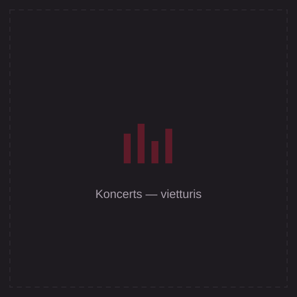
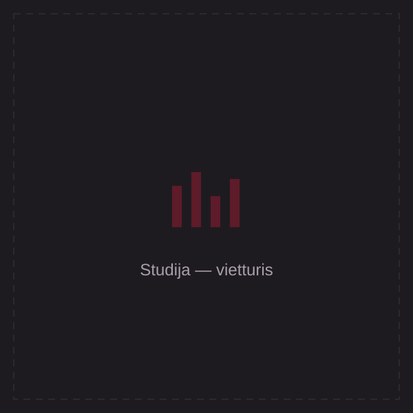
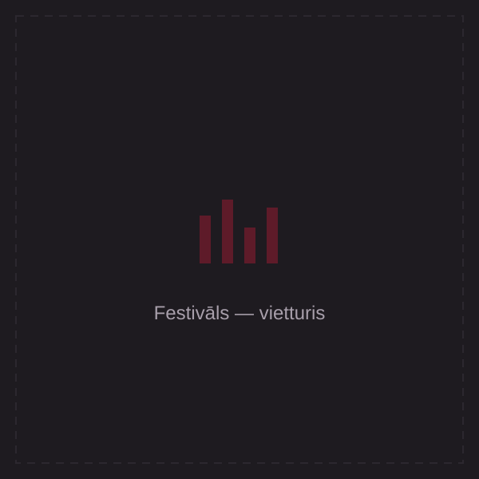
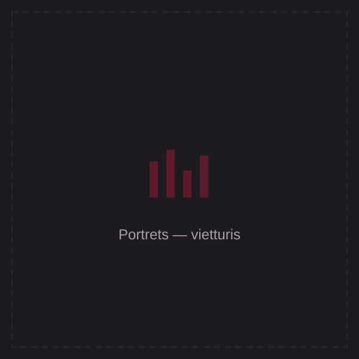
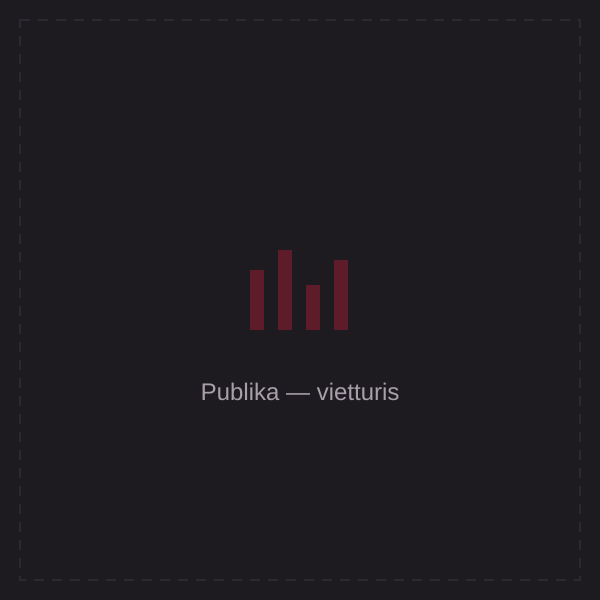
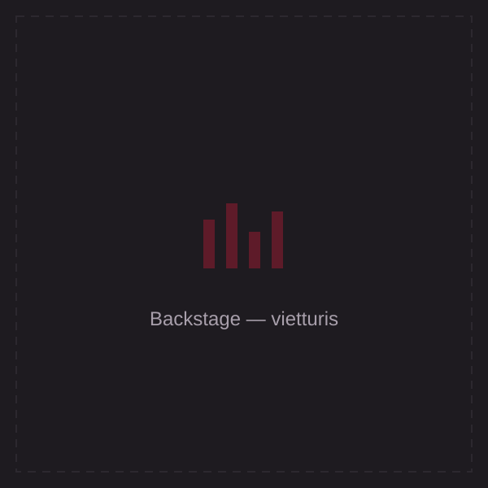

Stāsts
No Ziepniekkalna
Reiks dzimis 1992. gada 10. oktobrī Rīgā un mūzikā darbojas kopš aptuveni 2007. gada. Viņa skanējums izauga no rajona ikdienas — no mājām, saknēm un tā, ko nozīmē būt no šejienes.
Kā grupas Kreisais Krasts dalībnieks un interneta iekarojušā projekta Olas daļa, Reiks ir kļuvis par vienu no atpazīstamākajām latviešu hip-hopa balsīm — dziesmās, kas skan festivālos un stāsta par vienotību.
Līdztekus skatuvei viņš strādā aiz pults: producē bītus, ieraksta un miksē dziesmas, veido mūzikas video un saturu — apvienojot mākslinieka izjūtu ar mediju eksperta amatu.
Ceļš
Nozīmīgākie pagriezieni
2007
Pirmie soļi
Sākums rajona mūzikā — pirmie ieraksti un rīmes par mājām un ikdienu.
Kreisais Krasts
Grupas balss
Kļūst par vienu no grupas Kreisais Krasts dalībniekiem un atpazīstamu latviešu hip-hopa vārdu.
Olas
Interneta hits
Daļa no projekta Olas, kas iekaroja internetu un plašāku auditoriju.
2016
Solo karjera — “Leģendas”
Ar singlu “Leģendas” sāk solo ceļu un pusgada laikā kļūst par vienu no skatītākajiem latviešu mūziķiem YouTube.
2018
Albums “Reiks Ir Visur”
Iznāk albums ar himnu “Latvija” — aicinājumu atgriezties mājās, kas skan visā valstī.
Šodien
Mākslinieks & producents
Skatuve, studija un mediju darbs — producēšana, ieraksti, video un saturs zīmoliem. Jaunākais darbs: “Kaķis un pele” ar Leldi Dreimani (2025).
Galerija
Mirkļi no skatuves






Gribi strādāt kopā?
Koncerts, dziesma vai saturs zīmolam — sāksim ar sarunu.